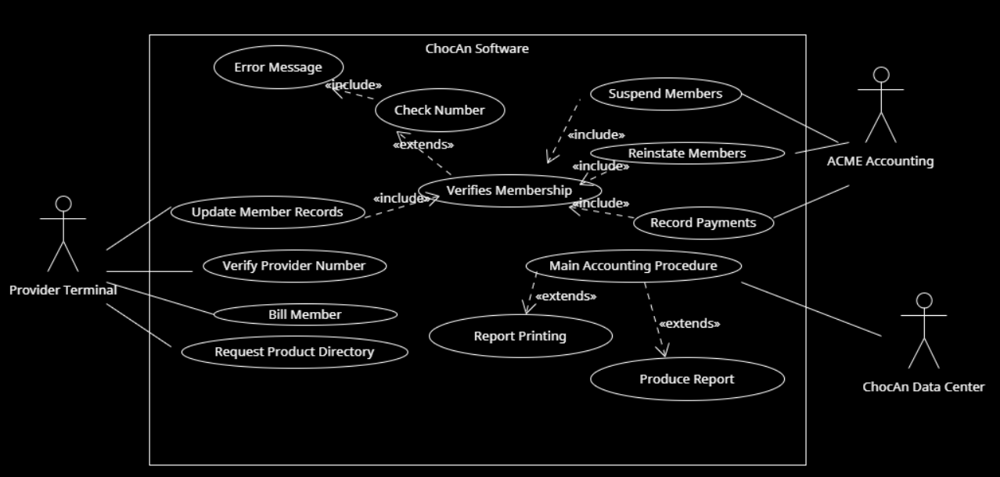
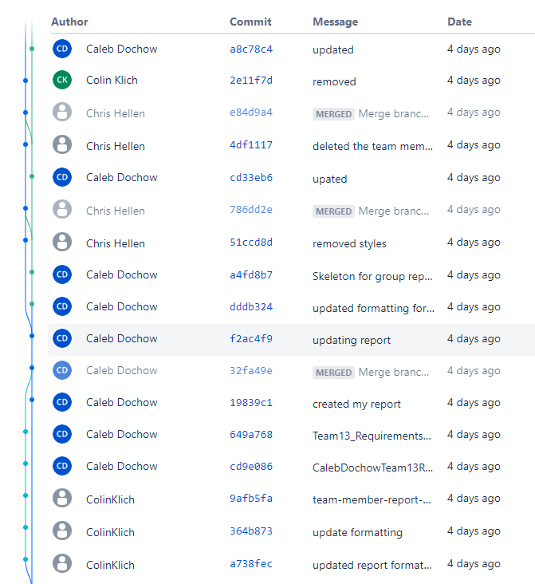
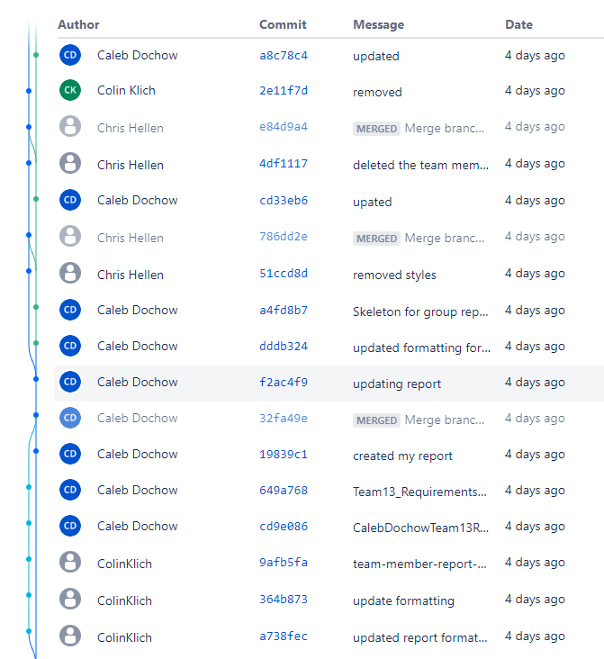

Project 1 Report
Team Members
| Name |
CWID |
Email |
Hours Worked |
| Caleb Dochow |
12158065 |
cdochow@crimson.ua.edu |
Hours Spent: 6 |
| Chris Hellen |
12066979 |
chellen@crimson.ua.edu |
Hours Spent: 6 |
| Colin Klich |
12114115 |
cmklich@crimson.ua.edu |
Hours Spent: 6 |
| Kara Moran |
12260246 |
kjmoran@crimson.ua.edu |
Hours Spent: 6 |
| Samuel Wisnoff |
12254702 |
slwisnoff@crimson.ua.edu |
Hours Spent: 6 |
Task Distrbution Table
| Name |
Task |
Percent Complete |
| Caleb Dochow |
Paragraph, Report.html, Use Case Diagram |
20% |
| Chris Hellen |
Use Case Desc., Report.html, Use Case Diagram |
20% |
| Colin Klich |
Use Case Desc., Report.html, Use Case Diagram |
20% |
| Kara Moran |
Glossary, Report.html, Use Case Diagram |
20% |
| Samuel Wisnoff |
Use Case Desc., Report.html, Use Case Diagram |
20% |
Project Overview
For Project 1, our group focused on the ChocAn software. This software handles everything, including verifying members, tracking member activity, organizing fees, and updating member records. Every individual on team 13 was tasked to produce a group file "Report.html" as well as submit a personal html file. Our group split up the necessary tasks to ensure equal participation for fairness and efficiency. Work was divided to have one person handle the Paragraph, one person handle the Glossary, and the rest handle the Use Case Definitions. After a task is complete, we move on to help with another task. The project also required every member to create their own Use Case Diagram, which allowed use to produce the best possible diagram for our final "Report.html". As mentioned earlier, we have provided Use Case Descriptions and a Glossary to further elaborate on our Use Case Diagram. This is featured in "Report.html".
Glossary
Acme Accounting Services Third-party organization partnered with ChocAn to provide financial procedures
ChocAn Data Center: Central system which holds all data concerning members, allows managers to update information about members, and automatically runs accounting procedure weekly
Chocoholics Anonymous (ChocAn): An organization dedicataed to helping people addicted to chocolate
Computer terminal: Interface available for providers to assist members
Electronic funds transfer (EFT): Record which contains data for the week's fees
Member card: Card which holds member number encoded on magnetic strips
Member number: Unique nine-digit code addigned to each member
Member: Patron of ChocAn seeking help for chocolate addiction
Monthly fee: Payment which entitles members to unlimited access of ChocAn's services
Provider directory: directory which holds service codes for each service
Provider form: Documentation filled out by provider to verify software's service record
Provider: Health care professional employed by ChocAn to provide a variety of services to members
Report: weekly document sent as email
Service code: Unique number that corresponds to the service received by a member
Service fee: Cost associated with a certain service, paid by ChocAn
Service record: Document recorded after each member's service to keep important information in ChocAn Data Center
Summary report: Document given to manager for them to track payments due for the week
Use Case Diagram

Use Case Descriptions
Use Case: Verify Service Code
Context: The provider inputs their code to gain access to the terminal.
Actors: Provider’s Terminal, ACME Accounting
Main Success Scenario:
- Provider passes card through ChocAn Terminal
- Keys in date of service
- Keys in six digit service code
Use Case: Update member records
Context: Provider Updates ChocAn member personal information
Actors: Provider’s Terminal
Main Success Scenario:
- Provider logs into ChocAn software in interactive mode
- Provider changes personal info of ChocAn member
Use Case: Verify Provider number
Context: Provider logs into ChocAn Software
Actors: Provider’s Terminal
Main Success Scenario:
- Provider switches on terminal
- Keys in provider number to verify access
- Provider has access to ChocAn provder software
Use Case: Bill member
Context: Provider Bills ChocAn for service provided
Actors: Provider’s Terminal
Main Success Scenario:
- Provider swipes card and keys in member number
- Keys in date service was provided
- Provider looks up and keys in correct service code
- Provider verifies the correct service was input
- ChocAn is billed for service
Use Case: Request product directory
Context: Provider requests directory from ChocAn software
Actors: Provider’s Terminal
Main Success Scenario:
- Provider requests software product from ChocAn
- Email attachment containing list of all ChocAn products is sent
Use Case: Verifies Membership
Context: The ChocAn system verifies the members identity for multiple system processes, including general verification and billing.
Actors: Provider Terminal, ChocAn Data Center, ACME Accounting
Main Success Scenario:
- The Provider scans the Member's nine-digit membership card.
- The ChocAn Data Center responds as to whether or not the ID number is valid
Extensions:ACME Accounting can modify membership status
Suspending members, reinstating members, and updating membership records all impact the verification process
Use Case: Suspend members
Context: When a member has not paid membership fees for over a month, their member status becomes
suspended, and they cannot receive services until they are reinstated.
Actors: ACME Accounting
Main Success Scenario:
- 1. Member has a valid account.
- 2. The member has not paid membership fees for at least a month.
- 3. Terminal displays “Member suspended".
- 4. Member removes suspended status when fees are paid.
Use Case: Reinstate members
Context: Member pays missing dues and is reinstated
Actors: ACME Accounting
Main Success Scenario:
- 1. Provider’s terminal shows member has a valid account.
- 2. Member’s account is listed as suspended.
- 3. Member pays amount owed in full.
- 4. Acme reinstates member’s account and removes suspended status.
Use Case: Record payments
Context: Records when users have made payments so that members can be suspended if they are behind on payments
Actors: ACME Accounting
Main Success Scenario:
- 1. The system displays the option “Member Payment Information” under the user's account information.
- 2. All member payment information is displayed.
- 3. Acme computer automatically updates ChocAn Data Center at 9 P.M. with new payment information
for each member
Use Case: Main Accounting procedure
Context: This system compiles the week’s financial data and creates transaction reports for members,
providers, and managers at their request.
Actors: ChocAn Data Center
Main Success Scenario:
- 1. The transactions are recorded in the ChocAn Data Center.
- 2. The Automatic Weekly Report Generator receives data from the Data Center and creates reports for
members and providers of their respective services purchased/provided, along with their account
information. It also includes a revenue total to the provider.
- 3. The reports are emailed to the members and providers.
Extends: Report Printing, Produce Report
Use Case: Report Printing
Context: The main accounting procedure of the ChocAn Data Center causes weekly reports to be created for members and providers.
Actors: ChocAn Data Center
Main Success Scenario:
Member Report
- Once the main accounting procedure finishes on Friday nights, an email is sent to the member's inbox.
- The email contains info regarding their dealings with ChocAn: member name, member number, street address, city, state, ZIP code, date of service, provider name, and service name.
Provider Report
- Once the main accounting procedure finishes on Friday nights, an email is sent to the providers's inbox.
- The email contains all the info on the member report for the provider, but also includes the service code, fee to be paid, the total number of consultations, and the total fee for the week.
Manager Report
- A manager report is also created that lists every provider to be paid for the week.
- The report also contains info on the number of consultations and fees for the week.
Use Case: Produce Report
Context:
Actors: ChocAn Data Center
Main Success Scenario:
- The main accounting procedure produces three different reports on Fridays: the member report, the provider report, and the manager report.
Use Case: Error Message
Context: An error message has the potential to appear when 9-digit member number is read.
Actors: ChocAn Data Center, Provider Terminal
Main Success Scenario
- Provider scans the members nine-digit membership card.
- If the membership number is valid, the word "Validated" appears on the terminal.
- If the membership number is invalid, the words "Invalid number" will appear.
- If the member has not paid membership fees for at least a month, the words "Member suspended" will appear.
Use Case: Check Number
Context: The Provider Terminal cross-references the member ID number with the verification info in the ChocAn Data Center
Actors: ChocAn Data Center, Provider Terminal
Main Success Scenario
- Provider Terminal sends the nine-digit membership ID number over to the ChocAn Data Center
- The ChocAn Data Center replies with confirmation as to whether or not that ID represents an active member.
Bitbucket Statistics
 
